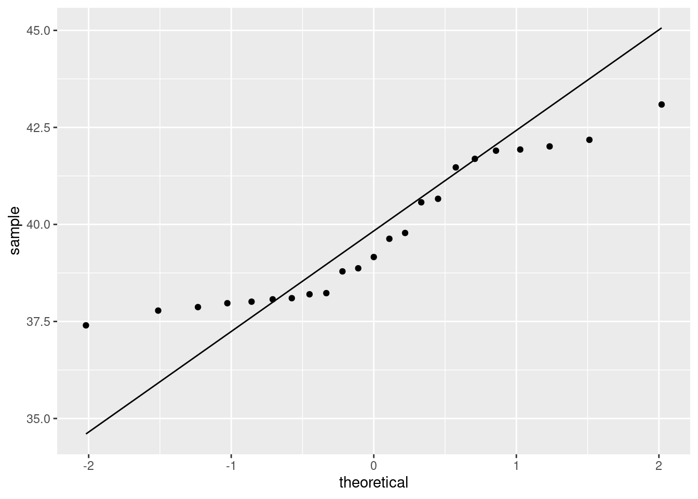

Chapter 7 Two-sample inference
## Warning: package 'MASS' was built under R version 4.0.5## Warning: package 'nnet' was built under R version 4.0.5## Warning: package 'Matrix' was built under R version 4.0.57.1 Children and electronic devices
Do children (aged 8–17) spend more time on electronic devices now than they did 10 years ago? Samples of 15 children aged 8–17 were taken in each of two years, 1999 and 2009, and the children (with their parents’ help) were asked to keep a diary of the number of hours they spent using electronic devices on a certain day. The data are in the file http://ritsokiguess.site/datafiles/pluggedin.txt.
Read in the data and verify that you have 30 rows of data from two different years.
Draw side-by-side boxplots of the number of hours for each year.
yearis a numeric variable that we want to treat as a factor, so we need to make it into a factor.Test whether the mean number of hours has increased since 1999. Which test did R do?
Obtain a 99% confidence interval for the difference in means.
7.2 Parking close to the curb
In 2009, the Toronto Star commissioned a survey to address the issue of who is better at parking a car: men or women. The researchers recorded 93 drivers who were parallel-parking their car in downtown Toronto, and for each driver, recorded the distance between the car and the curb, in inches, when the driver was finished parking their car. The data are in an Excel spreadsheet, link. Click on the link. The data will probably download automatically. Check the folder on your computer where things get downloaded.1 If the spreadsheet is just displayed and not downloaded, save it somewhere on your computer.
There are two sheets in this spreadsheet workbook. They are of the same data in two different formats. Take a look at Sheet 1 and Sheet 2. Describe the format of the data in each case. Which will be the most suitable data layout, bearing in mind that one of the first things we do is to make side-by-side boxplots of parking distances for males and females? Explain briefly.
Read your preferred sheet directly into R, without using a
.csvfile. (There is a clue in the lecture notes, in the section about reading in files.) If you get stuck, make a.csvfile and read that in.Obtain side-by-side boxplots of parking distances for males and females. Does one gender seem to be better at parking than the other? Explain briefly.
Explain briefly why this is two independent samples rather than matched pairs.
Run a suitable \(t\)-test for comparing parking distances for males and females. What do you conclude, in the context of the data?
Why might you have some doubts about the \(t\)-test that you just did? Explain briefly.
The Toronto Star in its report said that females are more accurate at parking their cars. Why do you think they concluded that, and do you think they were right to do so? Explain briefly.
7.3 Bell peppers and too much water
A pathogen called Phytophthora capsici causes bell
peppers to wilt and die. It is thought that too much water aids in the
spread of the pathogen. Two fields are under study, labelled
a and b. The first step in the research project is
to compare the mean soil water content of the two fields. There is
a suspicion that field a will have a higher water content
than field b. The data
are in the
file
link.
Read the file in using
read_csv, and list the resulting data frame.Make side-by-side boxplots of the water content values for the two fields. How do the fields seem to compare?
Do a two-sample \(t\)-test to test whether there is evidence that the mean water content in field
ais higher than that of fieldb. What do you conclude? Explain briefly. (You’ll need to figure out a way of doing a one-sided test, or how to adapt the results from a two-sided test.)Is the result of your test consistent with the boxplot, or not? Explain briefly.
7.4 Exercise and anxiety and bullying mice
Does exercise help to reduce anxiety? To assess this, some researchers randomly assigned mice to either an enriched environment where there was an exercise wheel available, or a standard environment with no exercise options. After three weeks in the specified environment, for five minutes a day for two weeks, the mice were each exposed to a “mouse bully” — a mouse who was very strong, aggressive, and territorial. One measure of mouse anxiety is amount of time hiding in a dark compartment, with mice who are more anxious spending more time in darkness. The amount of time spent in darkness is recorded for each of the mice.
The data can be found at link.
Read the data into R, and display your data frame. Count the number of mice in each group.
Draw side-by-side boxplots of time spent in darkness for each group of mice.
Do the boxplots support the hypothesis about exercise and anxiety? Explain briefly.
Carry out a \(t\)-test for comparing the mean time spent in darkness for the mice in the two groups. Think carefully about the details of the \(t\)-test (and what you need evidence in favour of).
What do you conclude, in terms of anxiety and exercise (at least for mice)? Explain briefly.
Does anything in the previous parts suggest any problems with the analysis you just did? Explain briefly.
7.5 Diet and growth in boys
A dietician is studying the effect of
different diets on children’s growth. In part of the study, the
dietician is investigating two religious sects, labelled a
and b in our data set. Both sects are vegetarian; the
difference between them is that people in Sect A only eat vegetables
from below the ground, and Sect B only eats vegetables from above the
ground. The height and weight of the boys2 are measured at regular
intervals. The data in
link are the
heights of the boys at age 12.
Read in the data and find out how many observations you have and which variables.
Obtain side-by-side boxplots of the heights for boys from each sect. Does it look as if the heights of the boys in each sect are different? Comment briefly.
Looking at your boxplots, do you see any problems with doing a two-sample \(t\)-test? Explain briefly.
Run a \(t\)-test to determine whether the mean heights differ significantly. What do you conclude? Explain briefly. (Run the \(t\)-test even if your previous work suggests that it is not the right thing to do.)
7.6 Handspans of males and females
Take your right hand, and stretch the fingers out as far as you can. The distance between the tip of your thumb and the tip of your little (pinky) finger is your handspan. The students in a Statistics class at Penn State measured their handspans and also whether they identified as male or female. The data are at http://ritsokiguess.site/datafiles/handspan.txt, with handspans measured in inches. Thinking of these as a random sample of all possible students, is it true that males have a larger mean handspan than females? This is what we will explore.
Read in and display (some of) the data.
Make a suitable graph of the two columns.
Run a suitable two-sample \(t\)-test to address the question of interest. What do you conclude, in the context of the data?
Obtain a 90% confidence interval for the difference in mean handspan between males and females. Do you need to run any more code? Explain briefly.
Explain briefly why you might have some concerns about the validity of the \(t\)-tests you ran in this question. Or, if you don’t have any concerns, explain briefly why that is.
7.7 The anchoring effect: Australia vs US
Two groups of students (in a class at a American university) were asked what they thought the population of Canada was. (The correct answer at the time was just over 30 million.) Some of the students, before having to answer this, were told that the population of the United States was about 270 million. The other students in the class were told that the population of Australia was about 18 million. The data are in . The first column contains the country whose population the student was told, and the second contains the student’s guess at the population of Canada.
You might wonder how being told the population of an unrelated country would have any impact on a student’s guess at the population of Canada. Psychology says it does: it’s called the anchoring effect, and the idea is that the number mentioned first acts as an “anchor”: a person’s guess will be closer to the anchor than it would have been otherwise. In this case, that would mean that the guesses for the students given the US as an anchor will be higher than for the students given Australia as an anchor. We are interested in seeing whether there is evidence for that here.
Read in and display (some of) the data.
Draw a suitable graph of these data.
Explain briefly why a Welch \(t\)-test would be better than a pooled \(t\)-test in this case.
Run a suitable Welch \(t\)-test and display the output.
What do you conclude from your test, in the context of the data?
My solutions follow:
7.8 Children and electronic devices
Do children (aged 8–17) spend more time on electronic devices now than they did 10 years ago? Samples of 15 children aged 8–17 were taken in each of two years, 1999 and 2009, and the children (with their parents’ help) were asked to keep a diary of the number of hours they spent using electronic devices on a certain day. The data are in the file http://ritsokiguess.site/datafiles/pluggedin.txt.
- Read in the data and verify that you have 30 rows of data from two different years.
Solution
I see this:
##
## ── Column specification ──────────────────────────────────────────────────────────────────────────────────────────────────────────────────────────────────────────────────────────────────────
## cols(
## year = col_double(),
## hours = col_double()
## )## # A tibble: 30 x 2
## year hours
## <dbl> <dbl>
## 1 1999 4
## 2 1999 5
## 3 1999 7
## 4 1999 7
## 5 1999 5
## 6 1999 7
## 7 1999 5
## 8 1999 6
## 9 1999 5
## 10 1999 6
## # … with 20 more rowsI see only the first ten rows (with an indication that there are 20 more, so 30 altogether). In your notebook, it’ll look a bit different: again, you’ll see the first 10 rows, but you’ll see exactly how many rows and columns there are, and there will be buttons “Next” and “Previous” to see earlier and later rows, and a little right-arrow to see more columns to the right (to which is added a little left-arrow if there are previous columns to scroll back to). If you want to check for yourself that there are 30 rows, you can click Next a couple of times to get down to row 30, and then see that the Next button cannot be clicked again, and therefore that 30 rows is how many there are.
Or, you can summarize the years by counting how many there are of each:
## # A tibble: 2 x 2
## year n
## <dbl> <int>
## 1 1999 15
## 2 2009 15or the more verbose form of the same thing:
## # A tibble: 2 x 2
## year rows
## <dbl> <int>
## 1 1999 15
## 2 2009 15Any of those says that it looks good. 30 rows, 1999 and 2009, 15 measurements for each.
\(\blacksquare\)
- Draw side-by-side boxplots of the number of hours for each
year.
yearis a numeric variable that we want to treat as a factor, so we need to make it into a factor.
Solution

The fct_inorder trick from assignment 1 will also work, since
the years are in the data in the order we want them to be displayed.
The median for 2009 is noticeably higher, and there is no skewness or outliers worth worrying about.
The measurements for the two years have a very similar spread, so there would be no problem running the pooled test here.
You might be bothered by the factor(year) on the \(x\)-axis. To
get around that, you can define year-as-factor first, using
mutate, then feed your new column into the boxplot. That goes
like this. There is a wrinkle that I explain afterwards:

You could even redefine year to be the factor version of
itself (if you don’t need the year-as-number anywhere else). The
wrinkle I mentioned above is that in the ggplot you name the data frame first; the data frame used is the
(nameless) data frame that came out of the previous step, not
plugged but plugged with a new column
the_year.
Note how the \(x\)-axis now has the name of the new variable.
If you forget to make year into a factor, this happens:
## Warning: Continuous x aesthetic -- did you forget aes(group=...)?
You get one boxplot, for all the hours, without distinguishing
by year, and a warning message that tries (and fails) to read our
mind: yes, we have a continuous, quantitative x, but
geom_boxplot doesn’t take a group.
\(\blacksquare\)
- Test whether the mean number of hours has increased since 1999. Which test did R do?
Solution
The hard part to remember is how you specify a one-sided test in
R; it’s alternative="less" (rather
than “greater”) because 1999 is “before” 2009:
##
## Welch Two Sample t-test
##
## data: hours by year
## t = -3.3323, df = 24.861, p-value = 0.001348
## alternative hypothesis: true difference in means is less than 0
## 95 percent confidence interval:
## -Inf -0.8121415
## sample estimates:
## mean in group 1999 mean in group 2009
## 5.933333 7.600000The P-value is 0.0013. R does the Welch-Satterthwaite test by default (the unequal-variances one). Since we didn’t change that, that’s what we got. (The pooled test is below.)
This is the cleanest way to do it, because this version of
t.test, with a “model formula” (the thing with the
squiggle) allows a data= to say which data frame to get
things from. The other ways, using (for example) with, also work:
##
## Welch Two Sample t-test
##
## data: hours by year
## t = -3.3323, df = 24.861, p-value = 0.001348
## alternative hypothesis: true difference in means is less than 0
## 95 percent confidence interval:
## -Inf -0.8121415
## sample estimates:
## mean in group 1999 mean in group 2009
## 5.933333 7.600000This also works, but is ugly:
##
## Welch Two Sample t-test
##
## data: plugged$hours by plugged$year
## t = -3.3323, df = 24.861, p-value = 0.001348
## alternative hypothesis: true difference in means is less than 0
## 95 percent confidence interval:
## -Inf -0.8121415
## sample estimates:
## mean in group 1999 mean in group 2009
## 5.933333 7.600000Ugly because you’ve just typed the name of the data frame and the dollar sign twice for no reason. As a general principle, if you as a programmer are repeating yourself, you should stop and ask yourself how you can avoid the repeat.
If you want the pooled test in R, you have to ask for it:
##
## Two Sample t-test
##
## data: hours by year
## t = -3.3323, df = 28, p-value = 0.001216
## alternative hypothesis: true difference in means is less than 0
## 95 percent confidence interval:
## -Inf -0.8158312
## sample estimates:
## mean in group 1999 mean in group 2009
## 5.933333 7.600000As is often the case, the P-values for the pooled and Welch-Satterthwaite tests are very similar, so from that point of view it doesn’t matter much which one you use. If you remember back to the boxplots, the number of hours had about the same spread for the two years, so if you used the pooled test instead of the Welch-Satterthwaite test, that would have been just fine.
There is a school of thought that says we should learn the Welch-Satterthwaite test and use that always. This is because W-S (i) works when the populations from which the groups are sampled have different SDs and (ii) is pretty good even when those SDs are the same.
The pooled test can go badly wrong if the groups have very different SDs. The story is this: if the larger sample is from the population with the larger SD, the probability of a type I error will be smaller than \(\alpha\), and if the larger sample is from the population with the smaller SD, the probability of a type I error will be larger than \(\alpha\). This is why you see S-W in STAB22. You see the pooled test in STAB57 because the logic of its derivation is so much clearer, not because it’s really the better test in practice. The theory says that if your data are normal in both groups with the same variance, then the pooled test is best, but it says nothing about the quality of the pooled test if any of that goes wrong. The usual approach to assessing things like this is via simulation, as we do for estimating power (later): generate some random data eg. from normal distributions with the same means, SDs 10 and 20 and sample sizes 15 and 30, run the pooled \(t\)-test, see if you reject, then repeat lots of times and see whether you reject about 5% of the time. Then do the same thing again with the sample sizes switched around. Or, do the same thing with Welch-Satterthwaite.
\(\blacksquare\)
- Obtain a 99% confidence interval for the difference in means.
Solution
Take off the thing that made it one-sided, and put in a thing that gets the right CI:
##
## Welch Two Sample t-test
##
## data: hours by year
## t = -3.3323, df = 24.861, p-value = 0.002696
## alternative hypothesis: true difference in means is not equal to 0
## 99 percent confidence interval:
## -3.0614628 -0.2718705
## sample estimates:
## mean in group 1999 mean in group 2009
## 5.933333 7.600000\(-3.06\) to \(-0.27\). The interval contains only negative values, which is consistent with our having rejected a null hypothesis of no difference in means.
\(\blacksquare\)
7.9 Parking close to the curb
In 2009, the Toronto Star commissioned a survey to address the issue of who is better at parking a car: men or women. The researchers recorded 93 drivers who were parallel-parking their car in downtown Toronto, and for each driver, recorded the distance between the car and the curb, in inches, when the driver was finished parking their car. The data are in an Excel spreadsheet, link. Click on the link. The data will probably download automatically. Check the folder on your computer where things get downloaded.3 If the spreadsheet is just displayed and not downloaded, save it somewhere on your computer.
- There are two sheets in this spreadsheet workbook. They are of the same data in two different formats. Take a look at Sheet 1 and Sheet 2. Describe the format of the data in each case. Which will be the most suitable data layout, bearing in mind that one of the first things we do is to make side-by-side boxplots of parking distances for males and females? Explain briefly.
Solution
The data in Sheet 1 has one column of parking distances for
males, and another for females. This is often how you see data
of this sort laid out. Sheet 2 has one column of parking
distances, all combined together, and a second column indicating
the gender of the driver whose distance is in the first column.
If you look back at the kind of data we’ve used to make
side-by-side boxplots, it’s always been in the format of Sheet
2: one column containing all the values of the variable we’re
interested in, with a second column indicating which group each
observation belongs to (“group” here being
“gender of driver”).
So we need to use the data in Sheet 2, because the
data in Sheet 1 are not easy to handle with R.
The layout of Sheet 2 is the way R likes to do most things:
so-called “long format” with a lot of rows and not many
columns. This is true for descriptive stuff: side-by-side
boxplots or histograms or means by group, as well as modelling
such as (here) a two-sample \(t\)-test, or (in other
circumstances, as with several groups) a one-way analysis of
variance.
Hadley Wickham, the guy behind the tidyverse, likes to
talk about “tidy data” (like Sheet 2), with each column
containing a variable, and “untidy data” (like Sheet 1), where
the two columns are the same thing (distances), but under
different circumstances (genders). As we’ll see later, it is
possible to convert from one format to the other. Usually you
want to make untidy data tidy (the function for this is called
pivot_longer).
\(\blacksquare\)
- Read your preferred sheet directly into R, without
using a
.csvfile. (There is a clue in the lecture notes, in the section about reading in files.) If you get stuck, make a.csvfile and read that in.
Solution
The direct way is to use the package readxl. This has a
read_excel that works the same way as any of the other
read_ functions. You’ll have to make sure that you
read in sheet 2, since that’s the one you want.
There is some setup first. There are a couple of ways you can do that:
Download the spreadsheet to your computer, and upload it to your project on R Studio Cloud (or, if you are running R Studio on your computer, use something like
file.chooseto get the file from wherever it got downloaded to).Use the function
download.fileto get the file from the URL and store it in your project folder directly. This also works in R Studio Cloud, and completely by-passes the download-upload steps that you would have to do otherwise. (I am grateful to Rose Gao for this idea.) Here is how you can usedownload.filehere:
my_url <- "http://ritsokiguess.site/datafiles/parking.xlsx"
local <- "parking.xlsx"
download.file(my_url, local, mode = "wb")When you’ve gotten the spreadsheet into your project folder via one of those two ways, you go ahead and do this:
## # A tibble: 93 x 2
## distance gender
## <dbl> <chr>
## 1 0.5 male
## 2 1 male
## 3 1.5 male
## 4 1.5 male
## 5 1.5 male
## 6 3 male
## 7 3.5 male
## 8 5 male
## 9 6 male
## 10 6 male
## # … with 83 more rowsYou have to do it this way, using the version of the spreadsheet on
your computer, since read_excel won’t take a
URL, or if it does, I can’t make it work.4
I put the spreadsheet in R Studio’s
current folder, so I could read it in by name, or you can do the
f <- file.choose() thing, find it, then read it in.
The sheet= thing can take either a number (as here: the
second sheet in the workbook), or a name (whatever name the sheet has
on its tab in the workbook).
Extra: Rose actually came up with a better idea, which I will show you and explain:
What tempfile() does is to create a temporary file to hold the
spreadsheet that you are about to download. After downloading the
spreadsheet to the temporary file, you then use read_excel to
read from the temporary file into the data frame.
The advantage of this approach is that the temporary file disappears
as soon as you close R, and so you don’t have a copy of the
spreadsheet lying around that you don’t need (once you have created
the dataframe that I called parking, anyway).
If you are wondering about that mode thing on
download.file: files are of two different types, “text”
(like the text of an email, that you can open and look at in something
like Notepad), and “binary” that you can’t look at directly, but for
which you need special software like Word or Excel to decode it for
you.5
The first character in mode is either
w for “write a new file”, which is what we want here, or
a for “append”, which would mean adding to the end of a
file that already exists. Thus mode="wb" means
“create a new binary file”.
End of Extra.
If you can’t make any of this work, then do it in two steps:
save the appropriate sheet as a .csv
file, and then read the .csv file using
read_csv. If you experiment, you’ll find that saving a
spreadsheet workbook as .csv only saves the sheet
you’re looking at, so make sure you are looking at sheet 2
before you Save As .csv. I did that, and called my
saved .csv parking2.csv (because it was from
sheet 2, but you can use any name you like).
Then I read this into R thus:
##
## ── Column specification ──────────────────────────────────────────────────────────────────────────────────────────────────────────────────────────────────────────────────────────────────────
## cols(
## distance = col_double(),
## gender = col_character()
## )## # A tibble: 93 x 2
## distance gender
## <dbl> <chr>
## 1 0.5 male
## 2 1 male
## 3 1.5 male
## 4 1.5 male
## 5 1.5 male
## 6 3 male
## 7 3.5 male
## 8 5 male
## 9 6 male
## 10 6 male
## # … with 83 more rowsThe read-in data frame parking
has 93 rows (\(47+46=93\) drivers) and two columns: the distance from
the curb that the driver ended up at, and the gender of the
driver. This is as the spreadsheet Sheet 2 was, and the first few
distances match the ones in the spreadsheet.
If I were grading this, you’d get some credit for the .csv
route, but I really wanted you to figure out how to read the Excel
spreadsheet directly, so that’s what would be worth full marks.
You might want to check that you have some males and some females, and how many of each, which you could do this way:
## # A tibble: 2 x 2
## gender n
## <chr> <int>
## 1 female 47
## 2 male 46\(\blacksquare\)
- Obtain side-by-side boxplots of parking distances for males and females. Does one gender seem to be better at parking than the other? Explain briefly.
Solution
With the right data set, this is a piece of cake:

The outcome variable is distance from the curb, so smaller should be better (more accurate parking). With that in mind, the median for females is a little smaller than for males (about 8.5 vs. about 10), so it seems that on average females are more accurate parkers than males are. The difference is small, however (and so you might be wondering at this point whether it’s a statistically significant difference — don’t worry, that’s coming up).
Before I leave this one, I want to show you something else: above-and-below histograms, as another way of comparing males and females (two or more groups, in general). First, we make a histogram of all the distances, without distinguishing by gender:

That big outlier is the very inaccurate male driver.
Now, how do we get a separate histogram for each
gender? In ggplot, separate plots for each
“something” are called facets, and the way to get facets
arranged as you want them is called facet_grid. Let me show you
the code first, and then explain how it works:

facet_grid takes a “model formula” with a squiggle, with \(y\)
on the left and \(x\) on the right. We want to compare our two
histograms, one for males and one for females, and I think the best
way to compare histograms is to have one on top of the other. Note
that the same distance scale is used for both histograms, so
that it is a fair comparison. The above-and-below is accomplished by
having gender as the \(y\) in the arrangement of the facets, so
it goes before the squiggle. We don’t have any \(x\) in the arrangement
of the facets, and we tell ggplot this by putting a dot where
the \(x\) would be.6
You can also use facet_wrap for this, but you have to be
more careful since you don’t have any control over how the histograms
come out (you probably get them side by side, which is not so helpful
for comparing distributions). You can make it work by using
ncol=1 to arrange “all” the histograms in one column:

The centres of both histograms are somewhere around 10, so it’s hard to see any real difference between males and females here. Maybe this is further evidence that the small difference we saw between the boxplots is really not worth getting excited about.
You might be concerned about how you know what to put with the
squiggle-thing in facet_grid and facet_wrap. The
answer is that facet_wrap only has something to the
right of the squiggle (which ggplot then decides how to
arrange), but facet_grid must have something on
both sides of the squiggle (how to arrange in the \(y\) direction
on the left, how to arrange in the \(x\) direction on the right), and if
you don’t have anything else to put there, you put a dot. Here’s my
facet_grid code from above, again:
We wanted gender to go up and down, and we had nothing to go left and
right, hence the dot. Contrast that with my facet_wrap
code:7
This says “make a separate facet for each gender”, but it doesn’t say anything about how to arrange them. The choice of bins for my histogram(s) came from Sturges’ rule: with \(n\) being the number of observations, you use \(k\) bins where \(k=\log_2(n)+1\), rounded up. If we were to make a histogram of all the parking distances combined together, we would have \(n=47+48=95\) observations, so we should use this many bins:
## [1] 7.569856Round this up to 8. (The second thing in log is the base of
the logs, if you specify it, otherwise it defaults to \(e\) and gives
you “natural” logs.) I seem to have the powers of 2 in my head, so I
can do it mentally by saying “the next power of 2 is 128, which is \(2^7\), so I need \(7+1=8\) bins.”
Or:
## [1] 8Sturges’ rule tends to produce not enough bins if \(n\) is small, so be prepared to increase it a bit if you don’t have much data. I think that gives a fairly bare-bones picture of the shape: skewed to the right with outlier.
The other rule we saw was Freedman-Diaconis:
## [1] 14and that leads to this histogram:

That gives rather more detail (a lot more bars: the binwidth in the Sturges-rule histogram is about 7, or twice what you see here), but in this case the overall story is about the same.
In the case of faceted histograms, you would want to apply a rule that
uses the number of observations in each histogram. The facets
might have quite different numbers of observations, but you can only
use one binwidth (or bins), so you may have to
compromise. For example, using Sturges’ rule based on 47 observations
(the number of males; the number of females is one more):
## [1] 6.554589and so each facet should have that many bins, rounded up. That’s where
I got my 7 for the facetted histogram from. This one doesn’t work
immediately with nclass.Sturges, because we do not have
one column whose length is the number of observations we want:
we have one column of distances that are males and females mixed
up. To do that, filter one of the genders first:
## [1] 7I used the “dot” trick again, which you can read as “it”: “from parking, take only the rows for the females, and with it, give me the number of bins for a histogram by Sturges’ rule.”
\(\blacksquare\)
- Explain briefly why this is two independent samples rather than matched pairs.
Solution
There is no way to pair any male with a corresponding female, because they are unrelated people. You might also notice that there are not even the same number of males and females, so there can be no way of pairing them up without leaving one over. (In general, if the two samples are paired, there must be the same number of observations in each; if there are different numbers in each, as here, they cannot be paired.) If you want that more mathematically, let \(n_1\) and \(n_2\) be the two sample sizes; then: \[ \mbox{Paired} \Longrightarrow n_1=n_2 \]
from which it follows logically (the “contrapositive”) that
\[ n_1 \ne n_2 \Longrightarrow \mbox{not paired} \] You’ll note from the logic that if the two sample sizes are the same, that tells you nothing about whether it’s paired or independent samples: it could be either, and in that case you have to look at the description of the data to decide between them.
Here, anything that gets at why the males and females cannot be paired up is good.
\(\blacksquare\)
- Run a suitable \(t\)-test for comparing parking distances for males and females. What do you conclude, in the context of the data?
Solution
A two-sample \(t\)-test. I think either the Welch or the pooled one can be justified (and I would expect them to give similar answers). You can do the Welch one either without comment or by asserting that the boxplots show different spreads; if you are going to do the pooled one, you need to say that the spreads are “about equal”, by comparing the heights of the boxes on the boxplots:
##
## Welch Two Sample t-test
##
## data: distance by gender
## t = -1.3238, df = 79.446, p-value = 0.1894
## alternative hypothesis: true difference in means is not equal to 0
## 95 percent confidence interval:
## -4.5884103 0.9228228
## sample estimates:
## mean in group female mean in group male
## 9.308511 11.141304This is the Welch-Satterthwaite version of the test, the one that does not assume equal SDs in the two groups. The P-value of 0.1894 is not small, so there is no evidence of any difference in parking accuracy between males and females.
Or, this being the pooled one:
##
## Two Sample t-test
##
## data: distance by gender
## t = -1.329, df = 91, p-value = 0.1872
## alternative hypothesis: true difference in means is not equal to 0
## 95 percent confidence interval:
## -4.5722381 0.9066506
## sample estimates:
## mean in group female mean in group male
## 9.308511 11.141304You might have thought, looking at the boxplots, that the groups had about the same SD (based, for example, on noting that the two boxes were about the same height, so the IQRs were about the same). In that case, you might run a pooled \(t\)-test, which here gives an almost identical P-value of 0.1872, and the exact same conclusion.
\(\blacksquare\)
- Why might you have some doubts about the \(t\)-test that you just did? Explain briefly.
Solution
The two-sample \(t\)-test is based on an assumption of normally-distributed data within each group. If you go back and look at the boxplots, you’ll see either (depending on your point of view) that both groups are right-skewed, or that both groups have outliers, neither of which fits a normal distribution. The outlier in the male group is particularly egregious.8 So I think we are entitled to question whether a two-sample \(t\)-test is the right thing to do. Having said that, we should go back and remember that the \(t\)-tests are “robust to departures from normality” (since we are working with the Central Limit Theorem here), and therefore that this test might be quite good even though the data are not normal, because the sample sizes of 40-plus are large (by the standards of what typically makes the Central Limit Theorem work for us). So it may not be as bad as it seems. A common competitor for the two-sample \(t\)-test is the Mann-Whitney test. This doesn’t assume normality, but it does assume symmetric distributions, which it’s not clear that we have here. I like a test called Mood’s Median Test, which is kind of the two-sample equivalent of the sign test (which we will also see later). It goes like this: Work out the overall median of all the distances, regardless of gender:
## # A tibble: 1 x 1
## med
## <dbl>
## 1 9The overall median is 9.
Count up how many distances of each gender were above or below the overall median. (Strictly, I’m supposed to throw away any values that are exactly equal to the overall median, but I won’t here for clarity of exposition.)
##
## gender FALSE TRUE
## female 23 24
## male 27 19For example, 19 of the male drivers had a distance (strictly) less than 9. Both genders are pretty close to 50–50 above and below the overall median, which suggests that the males and females have about the same median. This can be tested (it’s a chi-squared test for independence, if you know that):
##
## Pearson's Chi-squared test
##
## data: tab
## X-squared = 0.89075, df = 1, p-value = 0.3453This is even less significant (P-value 0.3453) than the two-sample \(t\)-test, and so is consistent with our conclusion from before that there is actually no difference between males and females in terms of average parking distance. The Mood’s median test is believable because it is not affected by outliers or distribution shape.
\(\blacksquare\)
- The Toronto Star in its report said that females are more accurate at parking their cars. Why do you think they concluded that, and do you think they were right to do so? Explain briefly.
Solution
The conclusion from the boxplots was that the female median distance was less than the males, slightly, in this sample. That is probably what the Star seized on. Were they right? Well, that was why we did the test of significance. We were trying to see whether this observed difference between males and females was “real” (would hold up if you looked at “all” male and female drivers) or “reproducible” (you would expect to see it again if you did another study like this one). The large, non-significant P-values in all our tests tell us that the difference observed here was nothing more than chance. So it was not reasonable to conclude that females generally are more accurate at parallel-parking than males are.
\(\blacksquare\)
7.10 Bell peppers and too much water
A pathogen called Phytophthora capsici causes bell
peppers to wilt and die. It is thought that too much water aids in the
spread of the pathogen. Two fields are under study, labelled
a and b. The first step in the research project is
to compare the mean soil water content of the two fields. There is
a suspicion that field a will have a higher water content
than field b. The data
are in the
file
link.
- Read the file in using
read_csv, and list the resulting data frame.
Solution
Reading directly from the URL is easiest:
##
## ── Column specification ──────────────────────────────────────────────────────────────────────────────────────────────────────────────────────────────────────────────────────────────────────
## cols(
## field = col_character(),
## water = col_double()
## )## # A tibble: 30 x 2
## field water
## <chr> <dbl>
## 1 a 10.2
## 2 a 10.7
## 3 a 15.5
## 4 a 10.4
## 5 a 9.9
## 6 a 10
## 7 a 16.6
## 8 a 15.1
## 9 a 15.2
## 10 a 13.8
## # … with 20 more rowsIf you like, find out how many observations you have from each field, thus:
## # A tibble: 2 x 2
## field n
## <chr> <int>
## 1 a 14
## 2 b 16Fourteen and sixteen.
\(\blacksquare\)
- Make side-by-side boxplots of the water content values for the two fields. How do the fields seem to compare?
Solution
This kind of thing:
This one is rather interesting: the distribution of water contents for
field a is generally higher than that for field b,
but the median for a is actually lower.
The other reasonable plot is a facetted histogram, something like this:

The distribution of water content in field b is actually
bimodal, which is probably the explanation of the funny thing with the
median. What actually seems to be happening (at least for these data)
is that the water content in field B is either about the same as field
A, or a lot less (nothing in between). I can borrow an idea from
earlier to find the five-number summaries for each field:
pepper %>%
nest(-field) %>%
rowwise() %>%
mutate(qq = list(enframe(quantile(data$water))))%>%
unnest(qq) %>%
select(-data) %>%
pivot_wider(names_from=name, values_from=value)## Warning: All elements of `...` must be named.
## Did you want `data = c(water)`?## # A tibble: 2 x 6
## field `0%` `25%` `50%` `75%` `100%`
## <chr> <dbl> <dbl> <dbl> <dbl> <dbl>
## 1 a 9.9 10.5 11.4 14.8 16.6
## 2 b 7.1 8.33 11.8 12.6 13.9This is a weird one: all the quantiles are greater for field A except for the median.
\(\blacksquare\)
- Do a two-sample \(t\)-test to test whether there is evidence
that the mean water
content in field
ais higher than that of fieldb. What do you conclude? Explain briefly. (You’ll need to figure out a way of doing a one-sided test, or how to adapt the results from a two-sided test.)
Solution
##
## Welch Two Sample t-test
##
## data: water by field
## t = 2.0059, df = 27.495, p-value = 0.0274
## alternative hypothesis: true difference in means is greater than 0
## 95 percent confidence interval:
## 0.2664399 Inf
## sample estimates:
## mean in group a mean in group b
## 12.52857 10.76875Note the use of alternative to specify that the first group
mean (that of field a) is bigger than the second, field
b, under the alternative hypothesis.
The P-value, 0.0274, is less than 0.05, so we reject the null (equal
means) in favour of the a mean being bigger than the
b mean: field a really does have a higher mean water
content.
Another way to tackle this is to do a two-sided test and adapt the P-value:
##
## Welch Two Sample t-test
##
## data: water by field
## t = 2.0059, df = 27.495, p-value = 0.0548
## alternative hypothesis: true difference in means is not equal to 0
## 95 percent confidence interval:
## -0.03878411 3.55842696
## sample estimates:
## mean in group a mean in group b
## 12.52857 10.76875This time we do not go straight to the P-value. First we check
that we are on the correct side, which we are since the sample mean
for field a is bigger than for field b. Then we are
entitled to take the two-sided P-value 0.0548 and halve it to
get the same 0.0274 that we did before.
\(\blacksquare\)
- Is the result of your test consistent with the boxplot, or not? Explain briefly.
Solution
The test said that field a had a greater mean water
content. Looking at the boxplot, this is consistent with where the
boxes sit (a’s box is higher up than
b’s). However, it is not consistent with the medians,
where b’s median is actually bigger.
You have two possible right answers here: comparing the boxes with
the test result (they agree) or comparing the medians with the
test result (they disagree). Either is good. If you like, you
could also take the angle that the two boxes overlap a fair bit,
so it is surprising that the test came out significant. (The
resolution of this one is that we have 30 measurements altogether,
14 and 16 in the two groups, so the sample size is not tiny. With
smaller samples, having overlapping boxes would probably lead to a
non-significant difference.)
\(\blacksquare\)
7.11 Exercise and anxiety and bullying mice
Does exercise help to reduce anxiety? To assess this, some researchers randomly assigned mice to either an enriched environment where there was an exercise wheel available, or a standard environment with no exercise options. After three weeks in the specified environment, for five minutes a day for two weeks, the mice were each exposed to a “mouse bully” — a mouse who was very strong, aggressive, and territorial. One measure of mouse anxiety is amount of time hiding in a dark compartment, with mice who are more anxious spending more time in darkness. The amount of time spent in darkness is recorded for each of the mice.
The data can be found at link.
- Read the data into R, and display your data frame. Count the number of mice in each group.
Solution
These are aligned columns with spaces in between, so we need read_table:
##
## ── Column specification ──────────────────────────────────────────────────────────────────────────────────────────────────────────────────────────────────────────────────────────────────────
## cols(
## Time = col_double(),
## Environment = col_character()
## )## # A tibble: 14 x 2
## Time Environment
## <dbl> <chr>
## 1 359 Enriched
## 2 280 Enriched
## 3 138 Enriched
## 4 227 Enriched
## 5 203 Enriched
## 6 184 Enriched
## 7 231 Enriched
## 8 394 Standard
## 9 477 Standard
## 10 439 Standard
## 11 428 Standard
## 12 391 Standard
## 13 488 Standard
## 14 454 StandardYou can call the data frame whatever you like.
If you must, you can physically count the number of mice in each group, but you ought to get in the habit of coding this kind of thing:
## # A tibble: 2 x 2
## Environment n
## <chr> <int>
## 1 Enriched 7
## 2 Standard 7Seven in each.
\(\blacksquare\)
- Draw side-by-side boxplots of time spent in darkness for each group of mice.
Solution
This:
You did remember to put capital letters on the variable names, didn’t you?
\(\blacksquare\)
- Do the boxplots support the hypothesis about exercise and anxiety? Explain briefly.
Solution
The hypothesis about exercise and anxiety is that mice who exercise more should be less anxious. How does that play out in this study? Well, mice in the enriched environment at least have the opportunity to exercise, which the mice in the standard environment do not, and anxiety is measured by the amount of time spent in darkness (more equals more anxious). So we’d expect the mice in the standard environment to spend more time in darkness, if that hypothesis is correct. That’s exactly what the boxplots show, with very little doubt.9 Your answer needs to make two points: (i) what you would expect to see, if the hypothesis about anxiety and exercise is true, and (ii) whether you actually did see it. You can do this either way around: for example, you can say what you see in the boxplot, and then make the case that this does support the idea of more exercise corresponding with less anxiety.
\(\blacksquare\)
- Carry out a \(t\)-test for comparing the mean time spent in darkness for the mice in the two groups. Think carefully about the details of the \(t\)-test (and what you need evidence in favour of).
Solution
We are trying to prove that exercise goes with less
anxiety, so a one-sided test is called for. The other thing to
think about is how R organizes the groups for
Environment: in alphabetical order. Thus
Enriched is first (like on the boxplot). We’re trying to
prove that the mean Time is less for
Enriched than for Standard, so we need alternative="less":
##
## Welch Two Sample t-test
##
## data: Time by Environment
## t = -6.7966, df = 9.1146, p-value = 3.734e-05
## alternative hypothesis: true difference in means is less than 0
## 95 percent confidence interval:
## -Inf -151.2498
## sample estimates:
## mean in group Enriched mean in group Standard
## 231.7143 438.7143A common clue that you have the wrong alternative hypothesis is a P-value coming out close to 1, which is what you would have gotten from something like this:
##
## Welch Two Sample t-test
##
## data: Time by Environment
## t = -6.7966, df = 9.1146, p-value = 1
## alternative hypothesis: true difference in means is greater than 0
## 95 percent confidence interval:
## -262.7502 Inf
## sample estimates:
## mean in group Enriched mean in group Standard
## 231.7143 438.7143Here, we looked at the pictures and expected to find a difference, so we expected to find a P-value close to 0 rather than close to 1.
\(\blacksquare\)
- What do you conclude, in terms of anxiety and exercise (at least for mice)? Explain briefly.
Solution
The P-value (from the previous part) is 0.000037, which is way less
than 0.05 (or 0.01 or whatever \(\alpha\) you chose). So the null
hypothesis (equal means) is resoundingly rejected in favour of the
one-sided alternative that the mean anxiety (as measured by time
spent in darkness) is less for the mice who (can) exercise.
You need to end up by doing a one-sided test. An alternative to
what I did is to do a two-sided test in the previous part. Then
you can fix it up by recognizing that the means are the right way
around for the research hypothesis (the mean time in darkness is
way less for Enriched), and then dividing the two-sided
P-value by 2. But you need to do the “correct side” thing: just
halving the two-sided P-value is not enough, because the sample
mean for Enriched might have been more than for
Standard.
\(\blacksquare\)
- Does anything in the previous parts suggest any problems with the analysis you just did? Explain briefly.
Solution
Look at the side-by-side boxplots. The strict assumptions hiding
behind the \(t\)-tests are that the data in each group come from
normal distributions (equal standard deviations are not
required). Are the data symmetric? Are there any outliers? Well, I
see a high outlier in the Enriched group, so I have some
doubts about the normality. On the other hand, I only have seven
observations in each group, so there is no guarantee even if the
populations from which they come are normal that the samples will
be. So maybe things are not so bad.
This is one of those situations where you make a case and defend it. I
don’t mind so much which case you make, as long as you can defend
it. Thus, something like either of these two is good:
I see an outlier in the
Enrichedgroup. The data within each group are supposed to be normally distributed, and theEnrichedgroup is not. So I see a problem.I see an outlier in the
Enrichedgroup. But the sample sizes are small, and an apparent outlier could arise by chance. So I do not see a problem.
Extra: another way to think about this is normal quantile plots to assess
normality within each group. This uses the facetting trick to get a separate normal quantile plot for each Environment:
ggplot(mice, aes(sample = Time)) + stat_qq() + stat_qq_line() +
facet_wrap(~Environment, scales = "free")
For the Enriched group, the upper-end outlier shows up. In a
way this plot is no more illuminating than the boxplot, because you
still have to make a call about whether this is “too big”. Bear in
mind also that these facetted normal quantile plots, with two groups,
come out tall and skinny, so vertical deviations from the line are
exaggerated. On this plot, the lowest value also looks too low.
For the Standard group, there are no problems with normality
at all.
What happens if we change the shape of the plots?
ggplot(mice, aes(sample = Time)) + stat_qq() + stat_qq_line() +
facet_wrap(~Environment, scales = "free", ncol = 1)
This makes the plots come out in one column, that is, short and
squat. I prefer these. I’d still call the highest value in
Enriched an outlier, but the lowest value now looks pretty
close to what you’d expect.
\(\blacksquare\)
7.12 Diet and growth in boys
A dietician is studying the effect of
different diets on children’s growth. In part of the study, the
dietician is investigating two religious sects, labelled a
and b in our data set. Both sects are vegetarian; the
difference between them is that people in Sect A only eat vegetables
from below the ground, and Sect B only eats vegetables from above the
ground. The height and weight of the boys10 are measured at regular
intervals. The data in
link are the
heights of the boys at age 12.
- Read in the data and find out how many observations you have and which variables.
Solution
The data values are separated by one space, so:
##
## ── Column specification ──────────────────────────────────────────────────────────────────────────────────────────────────────────────────────────────────────────────────────────────────────
## cols(
## sect = col_character(),
## height = col_double()
## )## # A tibble: 21 x 2
## sect height
## <chr> <dbl>
## 1 a 140
## 2 a 140
## 3 a 140
## 4 a 143
## 5 a 135
## 6 a 144
## 7 a 156
## 8 a 149
## 9 a 146
## 10 a 148
## # … with 11 more rows21 observations on two variables, sect and
height. (You should state this; it is not enough to make the
reader figure it out for themselves.)
The heights are evidently in centimetres.
You can call the data frame whatever you like.
\(\blacksquare\)
- Obtain side-by-side boxplots of the heights for boys from each sect. Does it look as if the heights of the boys in each sect are different? Comment briefly.
Solution
The boxplot is the kind of thing we’ve seen before:

It looks to me as if the boys in Sect B are taller on average.
\(\blacksquare\)
- Looking at your boxplots, do you see any problems with doing a two-sample \(t\)-test? Explain briefly.
Solution
The assumption is that the data in each group are “approximately normal”. Boxplots don’t tell you about normality specifically, but they tell you whether there are any outliers (none here) and something about the shape (via the lengths of the whiskers). I’d say the Sect A values are as symmetric as we could hope for. For Sect B, you can say either that they’re skewed to the left (and that therefore we have a problem), or that the heights are close enough to symmetric (and that therefore we don’t). For me, either is good. As ever, normal quantile plots can offer more insight. With data in this form, the two samples are mixed up, but using facets is the way to go. Philosophically, we draw a normal quantile plot of all the heights, and then say at the end that we would actually like a separate plot for each sect:

I decided that I wanted short squat plots rather than tall skinny ones.
With the sizes of the samples, I really don’t see any problems here. Most of the evidence for the left skewness in Sect B is actually coming from that largest value being too small. Sect A is as good as you could wish for. Having extreme values being not extreme enough is not a problem, since it won’t be distorting the mean.
The other way of doing this is to use filter to pull out the
rows you want and then feed that into the plot:
and the same for sect B. This is the usual ggplot-in-pipeline
thing where you don’t have a named data frame in the ggplot
because it will use whatever came out of the previous step of the
pipeline.
\(\blacksquare\)
- Run a \(t\)-test to determine whether the mean heights differ significantly. What do you conclude? Explain briefly. (Run the \(t\)-test even if your previous work suggests that it is not the right thing to do.)
Solution
The wording states that a two-sided test is correct, which is the default, so you don’t need anything special:
##
## Welch Two Sample t-test
##
## data: height by sect
## t = -1.7393, df = 14.629, p-value = 0.103
## alternative hypothesis: true difference in means is not equal to 0
## 95 percent confidence interval:
## -12.007505 1.229728
## sample estimates:
## mean in group a mean in group b
## 144.8333 150.2222This is a two-sample test, so it takes a data=.
Our null hypothesis is that the two sects have equal mean height. The P-value of 0.103 is larger than 0.05, so we do not reject that null hypothesis. That is, there is no evidence that the sects differ in mean height. (That is, our earlier thought that the boys in Sect B were taller is explainable by chance.)
You must end up with a statement about mean heights, and when you do a test, you must state the conclusion in the context of the problem, whether I ask you to or not. “Don’t reject the null hypothesis” is a step on the way to an answer, not an answer in itself. If you think it’s an answer in itself, you won’t be of much use to the world as a statistician.
You might have been thinking that Mood’s median test was the thing, if you were worried about that skewness in Sect B. My guess is that the \(t\)-test is all right, so it will be the better test (and give the smaller P-value) here, but if you want to do it, you could do it this way:
## $table
## above
## group above below
## a 4 7
## b 6 3
##
## $test
## what value
## 1 statistic 1.8181818
## 2 df 1.0000000
## 3 P-value 0.1775299My suspicion (that I wrote before doing the test) is correct: there is
even less evidence of a difference in median height between the
sects. The table shows that both sects are pretty close to 50–50
above and below the overall median, and with sample sizes this small,
they are certainly not significantly different from an even split. The
small frequencies bring a warning about the chi-squared approximation
possibly not working (that smmr suppresses). We had one like
this elsewhere, but there the result was very significant, and this one
is very non-significant. However, the implication is the same: even if
the P-value is not very accurate (because the expected frequencies for
sect B are both 4.5), the conclusion is unlikely to be wrong because
the P-value is so far from 0.05.
\(\blacksquare\)
7.13 Handspans of males and females
Take your right hand, and stretch the fingers out as far as you can. The distance between the tip of your thumb and the tip of your little (pinky) finger is your handspan. The students in a Statistics class at Penn State measured their handspans and also whether they identified as male or female. The data are at http://ritsokiguess.site/datafiles/handspan.txt, with handspans measured in inches. Thinking of these as a random sample of all possible students, is it true that males have a larger mean handspan than females? This is what we will explore.
- Read in and display (some of) the data.
Solution
This is a delimited (by spaces) file, so:
library(tidyverse)
my_url <- "http://ritsokiguess.site/datafiles/handspan.txt"
span <- read_delim(my_url, " ")##
## ── Column specification ──────────────────────────────────────────────────────────────────────────────────────────────────────────────────────────────────────────────────────────────────────
## cols(
## sex = col_character(),
## handspan = col_double()
## )## # A tibble: 190 x 2
## sex handspan
## <chr> <dbl>
## 1 M 21.5
## 2 M 22.5
## 3 M 23.5
## 4 F 20
## 5 F 19
## 6 F 20.5
## 7 F 20.5
## 8 F 20.2
## 9 M 23
## 10 M 24.5
## # … with 180 more rows\(\blacksquare\)
- Make a suitable graph of the two columns.
Solution
One quantitative variable and one categorical one, so a boxplot:

\(\blacksquare\)
- Run a suitable two-sample \(t\)-test to address the question of interest. What do you conclude, in the context of the data?
Solution
We are trying to show that males have a mean handspan, so we need an . To see which: there are two sexes, F and M in that order, and we are trying to show that F is less than M:
##
## Welch Two Sample t-test
##
## data: handspan by sex
## t = -10.871, df = 187.92, p-value < 2.2e-16
## alternative hypothesis: true difference in means is less than 0
## 95 percent confidence interval:
## -Inf -2.154173
## sample estimates:
## mean in group F mean in group M
## 20.01699 22.55747The P-value is very small, so there is no doubt that males have larger average handspans than females.
\(\blacksquare\)
- Obtain a 90% confidence interval for the difference in mean handspan between males and females. Do you need to run any more code? Explain briefly.
Solution
A confidence interval is two-sided, so we have to re-run the test without the to make it two-sided. Note also that we need a 90% interval, which is different from the default 95%, so we have to ask for that too:
##
## Welch Two Sample t-test
##
## data: handspan by sex
## t = -10.871, df = 187.92, p-value < 2.2e-16
## alternative hypothesis: true difference in means is not equal to 0
## 90 percent confidence interval:
## -2.926789 -2.154173
## sample estimates:
## mean in group F mean in group M
## 20.01699 22.55747The interval is \(-2.93\) to \(-2.15\), . It would be even better to say that males have a mean handspan between 2.15 and 2.93 inches larger than that of females. You also need to round off your answer: the data are given to 0 or 1 decimals, so your interval should be given to 1 or 2 decimals (since the confidence interval is for a mean).
On a question like this, the grader is looking for three things:
- getting the output
- saying what the interval is
- rounding it to a suitable number of decimals.
Thus, getting the output alone is only one out of three things.
\(\blacksquare\)
- Explain briefly why you might have some concerns about the validity of the \(t\)-tests you ran in this question. Or, if you don’t have any concerns, explain briefly why that is.
Solution
The major assumption here is that the male and female handspans have (approximate) normal distributions. The boxplots we drew earlier both had low-end outliers, so the normality is questionable.
Also, say something about the sample sizes and whether or not you think they are large enough to be helpful.
How big are our sample sizes?
## # A tibble: 2 x 2
## sex n
## <chr> <int>
## 1 F 103
## 2 M 87My suspicion is that we are saved by two things: the sample sizes are large enough for the central limit theorem to help us, and in any case, the conclusion is so clear that the assumptions can afford to be off by a bit.
Extra: one way to think about whether we should be concerned about the lack of normality is to use the to see what the sampling distribution of the sample mean might look like for males and for females. (This is the stuff in Lecture 5a.) The way this works is to sample from each distribution , work out the mean of each sample, then repeat many times, once for the females and once for the males.
To start with the females, the first thing to do is to grab only the rows containing the females. This, using an idea from Lecture 5a that we see again properly later, is filter:
## # A tibble: 103 x 2
## sex handspan
## <chr> <dbl>
## 1 F 20
## 2 F 19
## 3 F 20.5
## 4 F 20.5
## 5 F 20.2
## 6 F 20
## 7 F 18
## 8 F 20.5
## 9 F 22
## 10 F 20
## # … with 93 more rowsThere are 103 females. From these we need to take a “large” number of bootstrap samples to get a sense of how the mean handspan of the females varies:
set.seed(457299)
tibble(sim = 1:1000) %>%
rowwise() %>%
mutate(the_sample = list(sample(females$handspan, replace = TRUE))) %>%
mutate(the_mean = mean(the_sample)) -> dThen we make a histogram of the bootstrap sampling distribution of the sample mean for the females:

I don’t know what you think of this. There are a few more extreme values than I would like, and it looks otherwise a bit left-skewed to me. But maybe I am worrying too much.
The males one works exactly the same way:
span %>% filter(sex=="M") -> males
tibble(sim = 1:1000) %>%
rowwise() %>%
mutate(the_sample = list(sample(males$handspan, replace = TRUE))) %>%
mutate(the_mean = mean(the_sample)) -> d
There is a similar story here. I think these are good enough overall, and so I am happy with the two-sample \(t\)-test, but it is not as clear-cut as I was expecting.
\(\blacksquare\)
7.14 The anchoring effect: Australia vs US
Two groups of students (in a class at a American university) were asked what they thought the population of Canada was. (The correct answer at the time was just over 30 million.) Some of the students, before having to answer this, were told that the population of the United States was about 270 million. The other students in the class were told that the population of Australia was about 18 million. The data are in . The first column contains the country whose population the student was told, and the second contains the student’s guess at the population of Canada.
You might wonder how being told the population of an unrelated country would have any impact on a student’s guess at the population of Canada. Psychology says it does: it’s called the anchoring effect, and the idea is that the number mentioned first acts as an “anchor”: a person’s guess will be closer to the anchor than it would have been otherwise. In this case, that would mean that the guesses for the students given the US as an anchor will be higher than for the students given Australia as an anchor. We are interested in seeing whether there is evidence for that here.
- Read in and display (some of) the data.
Solution
I made it as easy as I could:
##
## ── Column specification ──────────────────────────────────────────────────────────────────────────────────────────────────────────────────────────────────────────────────────────────────────
## cols(
## anchor = col_character(),
## estimate = col_double()
## )## # A tibble: 21 x 2
## anchor estimate
## <chr> <dbl>
## 1 US 20
## 2 US 90
## 3 US 1.5
## 4 US 100
## 5 US 132
## 6 US 150
## 7 US 130
## 8 US 40
## 9 US 200
## 10 US 20
## # … with 11 more rowsYou might need to scroll down to see that both “anchor” countries are indeed represented.
\(\blacksquare\)
- Draw a suitable graph of these data.
Solution
One categorical variable and one quantitative one, so a boxplot:

\(\blacksquare\)
- Explain briefly why a Welch \(t\)-test would be better than a pooled \(t\)-test in this case.
Solution
The decision between these two tests lies in whether you think the two groups have equal spread (variance, strictly). Here, the spread for the US group is much larger than for the Australia group, even taking into account the big outlier in the latter group. Since the spreads are different, we should do a Welch \(t\)-test rather than a pooled one.
Make sure you answer the question I asked, not the one you think I should have asked.
There is a separate question about whether the groups are close enough to normal, but I wasn’t asking about that here. I was asking: given that we have decided to do some kind of \(t\)-test, why is the Welch one better than the pooled one? I am not asking whether we should be doing any kind of \(t\)-test at all; if I had, you could then reasonably talk about the outlier in the Australia group, and other possible skewness in its distribution, but that’s not what I asked about.
\(\blacksquare\)
- Run a suitable Welch \(t\)-test and display the output.
Solution
The word “suitable” is a hint that you may have to think a bit about how you run the test. If the anchoring effect is real, the mean of the guesses for the students told the population of the US will be higher on average than for those told the population of Australia, so we want a one-sided alternative. Australia is before the US alphabetically, so the alternative has to be less:
##
## Welch Two Sample t-test
##
## data: estimate by anchor
## t = -3.0261, df = 10.558, p-value = 0.006019
## alternative hypothesis: true difference in means is less than 0
## 95 percent confidence interval:
## -Inf -26.63839
## sample estimates:
## mean in group australia mean in group US
## 22.45455 88.35000Note that the Welch test is the default, so you don’t have to do anything special to get it. Your output will tell you that a Welch test is what you have.
It’s if you want a pooled test that you have to ask for it specifically (with var.equal = TRUE).
If you get a P-value close to 1, this is often an indication that you have the alternative the wrong way around.
\(\blacksquare\)
- What do you conclude from your test, in the context of the data?
Solution
The P-value is definitely less than 0.05, so we reject the null hypothesis (which says that the mean guess is the same regardless of the anchor the student was given). So we have evidence that the mean guess is higher for the students who were given the US population first.
Extra 1: this is perhaps the place to think about what effect that outlier in the australia group might have had. Since it is a high outlier, its effect will be to make the the australia mean higher than it would have been otherwise, and therefore to make the two group means closer together. Despite this, the difference still came out strongly significant, so that we can be even more sure than the P-value says that there is a real difference between the means of estimates of the population of Canada. (To say it differently, if the outlier had not been there, the difference in means would have been even bigger and thus even more significant.)
Extra 2: if you are still worried about doing a two-sample \(t\)-test here, you might consider looking at the bootstrapped sampling distribution of the sample mean of the australia group:
canada %>% filter(anchor == "australia") -> oz
tibble(sim = 1:1000) %>%
rowwise() %>%
mutate(the_sample = list(sample(oz$estimate, replace = TRUE))) %>%
mutate(the_mean = mean(the_sample)) %>%
ggplot(aes(x = the_mean)) + geom_histogram(bins=10)
This is indeed skewed to the right (though, with 11 observations, not nearly so non-normal as the original data), and so the P-value we got from the \(t\)-test may not be reliable. But, as discussed in Extra 1, the “correct” P-value is, if anything, even smaller than the one we got, and so the conclusion we drew earlier (that there is a significant anchoring effect) is not going to change.
Extra 3: looking even further ahead, there is a test that definitely does apply here, called Mood’s Median Test. You won’t have installed the package yet, so this won’t work for you just yet (read ahead if you want to learn more), but here’s how it goes:
## $table
## above
## group above below
## australia 2 5
## US 7 1
##
## $test
## what value
## 1 statistic 5.40178571
## 2 df 1.00000000
## 3 P-value 0.02011616This does (as it is written) a two-sided test, because it can also be used for comparing more than two groups. Since we want a one-sided test here, you can (i) check that we are on the correct side (we are)11 (ii) halve the P-value to get 0.010.
This is a P-value you can trust. It is not smaller than the \(t\)-test one, perhaps because this test is less powerful than the \(t\)-test in most cases.12
\(\blacksquare\)
Mine is rather prosaically called
Downloads.↩This was not sexism, but a recognition that boys and girls will be of different heights for reasons unrelated to diet. Doing it this way makes the analysis simpler.↩
Mine is rather prosaically called
Downloads.↩Let me know if you have more success than I did.↩
A Word or Excel document has all kinds of formatting information hidden in the file as well as the text that you see on the screen.↩
You might have a second categorical variable by which you want to arrange the facets left and right, and that would go where the dot is.↩
I took out the
ncolsince that confuses the explanation here.↩Google defines this as meaning “outstandingly bad, shocking”.↩
This means that I would expect to reject a null hypothesis of equal means, but I get ahead of myself.↩
This was not sexism, but a recognition that boys and girls will be of different heights for reasons unrelated to diet. Doing it this way makes the analysis simpler.↩
The test works by comparing the data values in each group to the overall median. The students who were given Australia as an anchor mostly guessed below the overall median, and the students given the US as an anchor mostly guessed above.↩
It uses the data less efficiently than the t-test; it just counts the number of values above and below the overall median in each group, rather than using the actual numbers to compute means.↩